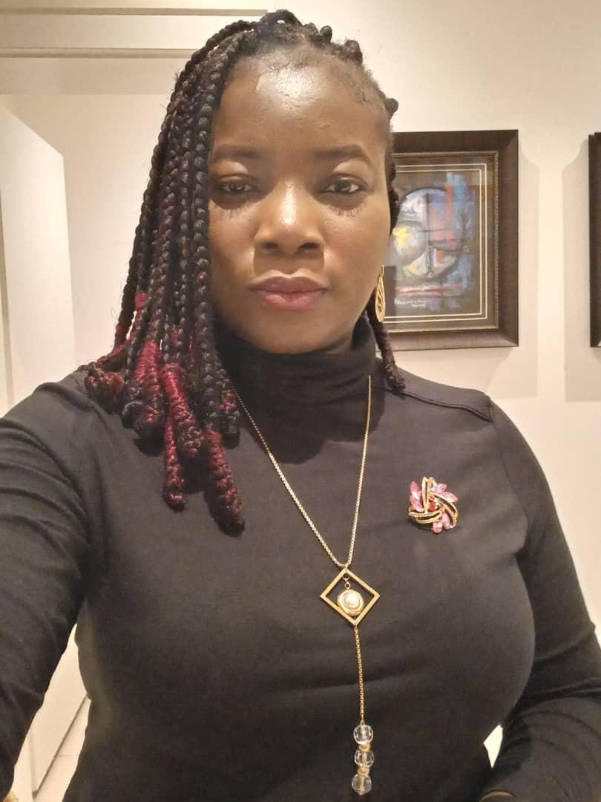

Ganiyat Bose Bakare | WDD 130
Hello, I am Ganiyat Bose Bakare, a proud native of Osun State, Nigeria, and currently residing in the lively city of Abuja, Federal Capital Territory. As the youngest daughter in a family of eight siblings, I've learned the importance of resilience and determination in facing life's challenges. When I'm not engrossed in my studies, I find joy in watching movies, grooving to music, and experimenting with new recipes in the kitchen. I am passionate about expanding my horizon by learning new things, forging meaningful connections, and putting in hard work to achieve my goals. Helping others is a core value of mine, and I greatly admire dedicated and hardworking individuals. My dream is to delve into the world of computer programming, a field that excites me with its endless possibilities. I am dedicated to my goals, embodying perseverance and a steadfast commitment to personal growth. I firmly believe in seizing the endless opportunities that come my way, leveraging them to enhance my skills and make a positive impact. With a deep-rooted passion for learning and a desire to contribute meaningfully to society, I am determined to carve a path that aligns with my values and aspirations.